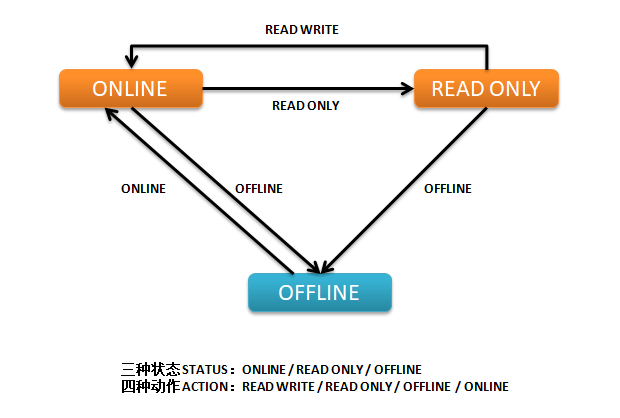

ALTER TABLESPACE <tablespace_name>ADD DATAFILE '<datafile_path>' SIZE 2M;
删除数据文件
Oracle版本 小于 10g 时，数据文件只能加入，不能删除，除非将表空间删除。
Oracle版本 从10g数据库版本开始可以删除。
ALTER TABLESPACE <tablespace_name>DROP DATAFILE '<datafile_path>';
改变数据文件的大小
改变数据文件的大小 可以加大，也可以缩小
ALTER DATABASE DATAFILE '<datafile_path>' RESIZE 3M;
3M为最后的大小，不是加大3M。
一个数据文件的最小值为文件头加最小的表；
一个数据文件的最大值为该表空间的块大小乘4M。
数据文件的自动扩展
查看表空间数据文件自动拓展属性
SELECT file_name, autoextensible, maxblocks, increment_by FROM dba_data_files;
修改数据库文件为自动拓展
alter database datafile '/home/oracle/ts1.dbf' autoextend on next 1m maxsize 100m;
关闭数据文件自动扩展功能
alter database datafile '/home/oracle/ts1.dbf' autoextend off;
修改表空间状态
查看表空间状态status属性
select tablespace_name,status from dba_tablespaces;
修改表空间的状态为只读
alter tablespace ts1 read only;
修改表空间状态为读写
alter tablespace ts1 read write;
只读表空间内的表不能DML，但可以DROP 。
因为DROP操作的是SYSTEM表空间，SYSTEM表空间不能设为只读。
修改表空间状态为离线
alter tablespace ts1 offline;
修改表空间状态为在线
alter tablespace ts1 online;

实践2-更改表空间的名称，更改数据文件的名称
该实验的目的是管理表空间,了解什么是数据文件的一致性。
修改表空间名
表空间改名称（10g新特性），前提条件为：
system和sysaux表空间不能改名称
要改的表空间必须online,read write
数据库版本10g以上
ALTER TABLESPACE ts1 RENAME TO ts2;
数据文件改名称
只将待修改的数据文件offline
查看数据文件位置
修改数据文件状态为Offline
操作系统层文件名变更
数据库层文件名变更
修改数据文件状态为online
查看dba_data_files验证
select tablespace_name,file_name,online_status from dba_data_files where tablespace_name='<tbs_name>'; alter database datafile '<old_file_path>' offline; !mv '<old_file_path>'to'<new_file_path>' ALTER DATABASE RENAME FILE '<old_file_path>'TO'<new_file_path>'; recover datafile '<new_file_path>'; alter database datafile '<new_file_path>' online; select name,status from v$datafile;
将表空间offline
查看数据文件位置
修改表空间状态为offline
操作系统层文件名变更跟
数据库层文件名变更
修改表空间状态为online
查看dba_data_files验证
select tablespace_name,file_name,online_status from dba_data_files where tablespace_name='<tbs_name>'; alter tablespace <tbs_name> offline; !mv '<old_file_path>'to'<new_file_path>' alter database rename file '<old_file_path>'TO'<new_file_path>'; alter tablespace <tbs_name> online; select name,status from v$datafile;
##实践3-删除表空间
删除数据文件：只能删除表空间，才能删除数据文件
临时表空间的临时文件除外，你可以删除临时表空间内的临时文件。
drop tablespace ts1 including contents and datafiles;
ALTER SESSION SET EVENTS 'immediate trace name file_hdrs level 3';
这句话将所有数据文件的头都转储到dump文件中。
file_hdrs事件：dump所有数据文件的头部信息
level
含义
1
控制文件中的文件头信息
2
level 1 + 文件头信息
3
level 2 + 数据文件头信息
获取跟踪文件名
SELECT a.VALUE || b.symbol || c.instance_name ||'_ora_' || d.spid ||'.trc' trace_file FROM (SELECTVALUE FROM v$parameter WHERE NAME ='user_dump_dest') a, (SELECT SUBSTR (VALUE, -6, 1) symbol FROM v$parameter WHERE NAME ='user_dump_dest') b, (SELECT instance_name FROM v$instance) c, (SELECT spid FROM v$session s, v$process p, v$mystat m WHERE s.paddr = p.addr AND s.SID = m.SID AND m.statistic# =0) d;
查看跟踪文件
[oracle@oratest ~]$ less /u01/app/oracle/diag/rdbms/booboo/BOOBOO/trace/BOOBOO_ora_4763.trc Trace file /u01/app/oracle/diag/rdbms/booboo/BOOBOO/trace/BOOBOO_ora_4763.trc Oracle Database 11g Enterprise Edition Release 11.2.0.4.0 - 64bit Production With the Partitioning, OLAP, Data Mining and Real Application Testing options ORACLE_HOME = /u01/app/oracle/product/11.2.0.4 System name: Linux Node name: oratest Release: 2.6.32-573.el6.x86_64 Version: #1 SMP Wed Jul 1 18:23:37 EDT 2015 Machine: x86_64 VM name: VMWare Version: 6 Instance name: BOOBOO Redo thread mounted by this instance: 1 Oracle process number: 17 Unix process pid: 4763, image: oracle@oratest (TNS V1-V3)